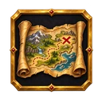
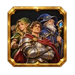
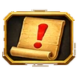
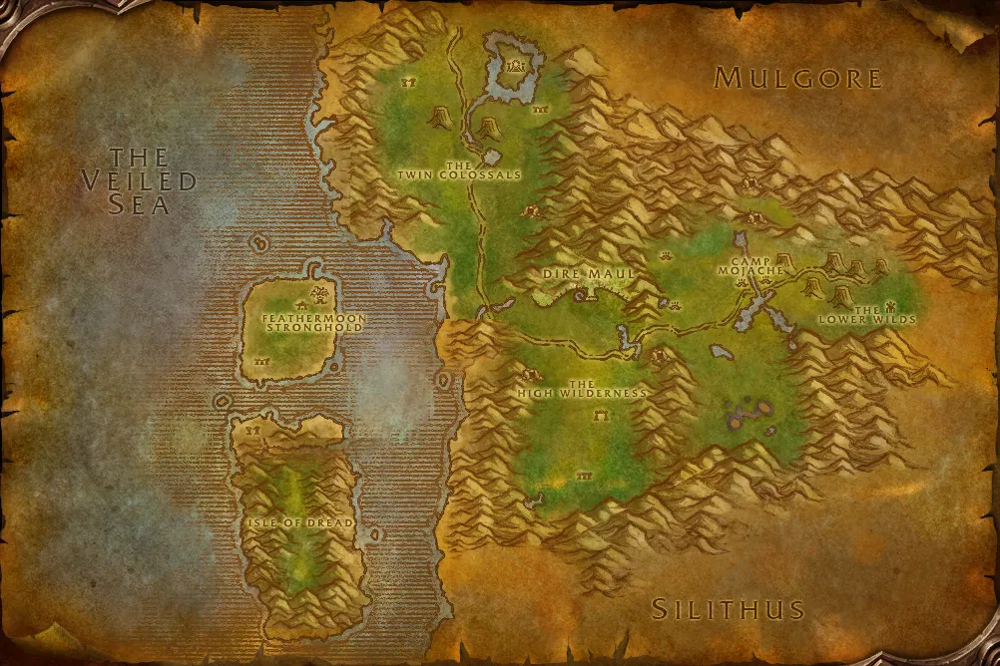

Accès

Entrée Féralas 59.2, 45.1
5 joueurs · niveaux 58 à 60
35 quêtes · 18 boss
Le point rouge marque l'entrée du donjon.
Toutes les zones sont sur notre carte interactive.
L'ancienne cité elfe d'Eldre'Thalas, au cœur de Féralas, en trois ailes : Est, Nord et Ouest.
📅 Mise à jour le 4 novembre 2026🛠 Patch 1.60.1.70755


Entrée Féralas 59.2, 45.1
5 joueurs · niveaux 58 à 60
35 quêtes · 18 bossLe point rouge marque l'entrée du donjon.
Toutes les zones sont sur notre carte interactive.
| Objet | Type |
|---|---|
| Anneau murmurant | Doigt |
| Pantalon élimé | Jambes |
| Gants d'étincelles | Mains |
| Objet | Type |
|---|---|
| Chapeau d'hiver vert | Tête |
| Pansière de tranquillité | Torse |
| Brassards de l'éclipse | Poignets |
| Masse usée | Une main |
| Jambières de Lune-d'argent | Jambes |
| Jambières indicibles | Jambes |
| Cape fluctuante | Dos |
| Brisepierre | Distance |
| Dague de distraction | Main gauche |
| Anneau de flamme émeraude | Doigt |
| Découpe-esprit | Main droite |
| Objet | Type |
|---|---|
| Cape d'amplification | Dos |
| Brassards magiquement scellés | Poignets |
| Talisman d'ouvresprit | Bijou |
| Epaulières ardentes | Épaules |
| Pendentif d'ancien magus | Cou |
| Objet | Type |
|---|---|
| Bouquet de roses rouges | Main gauche |
| Hache bien équilibrée | Une main |
| Gantelets de précision | Mains |
| Gantelets imprégnés de force | Mains |
| Pantalon du Padre | Jambes |
| Objet | Type |
|---|---|
| Bouclier d'écorce pétrifiée | Bouclier |
| Bâton de fleur-pierre | Deux mains |
| Jambières d'Enchevêtre | Jambes |
| Cordon de Crochebois | Taille |
| Objet | Type |
|---|---|
| Gants de la brume ombreuse | Mains |
| Chapeau astucieux | Tête |
| Casque de vigilance | Tête |
| Camail fervent | Tête |
| Arc du satyre | Distance |
| Objet | Type |
|---|---|
| Gants de restauration | Mains |
| Machette démoniaque | Une main |
| Pansière énergétique | Torse |
| Anneau de fourberie démoniaque | Doigt |
| Anneau de puissance démoniaque | Doigt |
| Grèves miséricordieuses | Pieds |
| Bâtonnet énergétique | Main droite |
| Gantelets-rasoirs | Mains |
| Corde de vigne-fouet | Taille |
| Cape d'ombrebois | Dos |
| Objet | Type |
|---|---|
| Charme de vigilance | Bijou |
| Lame de la Nouvelle lune | Main droite |
| Gants de tir rapide | Mains |
| Grèves odieuses | Pieds |
| Pendentif de mauvais oeil | Cou |
| Spallières gravées à la bile | Épaules |
| Robe de la nuit éternelle | Torse |
| Cape du cosmos | Dos |
| Corde de pédoncule | Taille |
| Garde-poignets de Hurledémon | Poignets |
| Objet | Type |
|---|---|
| Lame barbare | Deux mains |
| Bottes en métal sales | Pieds |
| Anneau du roi ogre | Doigt |
| Pierre étincelante | Main gauche |
| Jambières de destruction | Jambes |
| Brassards de prospérité | Poignets |
| Couronne du roi des ogres | Tête |
| Gantelets d'harmonie | Mains |
| Objet | Type |
|---|---|
| Jambière des brisants | Jambes |
| Chaussures de la marée | Pieds |
| Talisman de tempête | Cou |
| Bottes de la gouttière | Pieds |
| Tranchevague | Deux mains |
| Objet | Type |
|---|---|
| Robe de combustion | Torse |
| Ceinture en peau de hyène | Taille |
| Garde-bras quelconques | Poignets |
| Garde-poignets galants | Poignets |
| Canon à main de base | Distance |
| Poing d'os dentelé | Main droite |
| Canif ogre | Une main |
| Anneau de nez gordok | Doigt |
| Objet | Type |
|---|---|
| Chope de Kreeg | Main gauche |
| Objet | Type |
|---|---|
| Baguette de canalisation de mana | Distance |
| Lame de Cho'Rush | Une main |
| Bouclier de l'Observateur | Bouclier |
| Chaperon de perspicacité | Tête |
| Objet | Type |
|---|---|
| Vouge monstrueuse | Deux mains |
| Pansière de Kromcrush | Torse |
| Ceinture de l'agresseur | Taille |
| Bottes de la Pleine lune | Pieds |
| Objet | Type |
|---|---|
| Baguette de Lethtendris | Distance |
| Anneau de Vigueur | Doigt |
| Bâtonnet de canalisation de Quel'dorai | Deux mains |
| Cagoule en gangrecuir | Tête |
| Objet | Type |
|---|---|
| Collier de Pimgib | Bijou |
| Objet | Type |
|---|---|
| Cape de Revanchion | Dos |
| L'Etreinte de l'ombre | Mains |
| Brassards de guérison | Poignets |
| Objet | Type |
|---|---|
| Gants Tisse-fer | Mains |
| Harpon de veneur | Deux mains |
| Marteau de revitalisation | Main droite |
| Totem de renaissance | Relique |
| Libram d'espoir | Relique |
| Bottes de férocité | Pieds |
Butin d'après les données de WoW Classic : Forever a ajouté de nouveaux objets dans les donjons, la liste sera complétée en jeu. Seuls les objets de qualité inhabituelle et mieux sont listés. Passe la souris sur un objet pour voir ses caractéristiques (info-bulle Wowhead), ou clique pour ouvrir sa fiche.
Donnée par : Messager Balthazad (Fossoyeuse), Gorlach le Hurleguerre (Orgrimmar), Messager de Thunder Bluff Windstrider (Les Pitons-du-Tonnerre)
Donnée par : Crieur Goodman (Hurlevent), Messager Hammerfall (Forgefer), Héraut Moonstalker (Darnassus)
Donnée par : Latronicus Moonspear (Féralas)
Récompense : Tisse-savoir
Donnée par : Talo Thornhoof (Féralas)
Récompense : Tisse-savoir
Donnée par : Azj'Tordin (Féralas)
Récompense : Epée du coureur · Bottes de vivacité
Donnée par : Capitaine Kromcrush (Hache-tripes)
Récompense : Garde-mains gordoks · Gantelets gordoks · Gants gordoks · Protège-mains gordoks
Donnée par : en ramassant Contrôler les ombres
Récompense : Sceau royal d'Eldre'Thalas
Donnée par : Ancienne de Shen'Dralar (Hache-tripes)
Donnée par : en ramassant Une lame elfique inachevée
Donnée par : en ramassant Garona : une étude en discrétion et en trahison
Récompense : Sceau royal d'Eldre'Thalas
Donnée par : Falrin Treeshaper (Hache-tripes)
Donnée par : Kreeg le Marteleur (Hache-tripes)
Récompense : Grog vert gordok · Bière-massue de Kreeg
Donnée par : en ramassant La lumière et comment l'altérer
Récompense : Sceau royal d'Eldre'Thalas
Donnée par : en ramassant La plus grande race de chasseurs
Récompense : Sceau royal d'Eldre'Thalas
Donnée par : Knot Thimblejack (Hache-tripes)
Récompense : Tenue d'ogre gordok
Donnée par : Knot Thimblejack (Hache-tripes)
Récompense : Tenue d'ogre gordok
Donnée par : Falrin Treeshaper (Hache-tripes)
Récompense : Perles de mojo ogre · Perles de puissance ogre
Donnée par : en ramassant Le Horion de givre et vous
Récompense : Sceau royal d'Eldre'Thalas
Donnée par : en ramassant Le Rêve d'Emeraude
Récompense : Sceau royal d'Eldre'Thalas
Donnée par : en ramassant Le codex de défense
Récompense : Sceau royal d'Eldre'Thalas
Donnée par : en ramassant Le guide de Nostro du tueur de dragons
Donnée par : Bodley ()
Donnée par : Bodley ()
Donnée par : Ancienne de Shen'Dralar (Hache-tripes)
Récompense : Broie-les-os · Casque des taillis · Bottes de carex
Donnée par : Anthion Harmon (Maleterres de l'Est)
Donnée par : en ramassant Les recettes de l’arcaniste
Récompense : Sceau royal d'Eldre'Thalas
Donnée par : Gardien du savoir Lydros (Hache-tripes)
Récompense : Arcanum de protection
Donnée par : Gardien du savoir Lydros (Hache-tripes)
Récompense : Arcanum de rapidité
Donnée par : Gardien du savoir Lydros (Hache-tripes)
Récompense : Arcanum de focalisation
Donnée par : Knot Thimblejack (Hache-tripes)
Donnée par : Knot Thimblejack (Hache-tripes)
Donnée par : Sage Korolusk (Féralas)
Donnée par : Erudite Runethorn (Féralas)
Donnée par : en ramassant Sainte Bolognaise : Ce que la lumière ne vous dit pas
Récompense : Sceau royal d'Eldre'Thalas
Donnée par : —
Noms des quêtes, des PNJ et des objets d'après les données du jeu (Polestar, CC BY 4.0, et Factoruide/Questie).